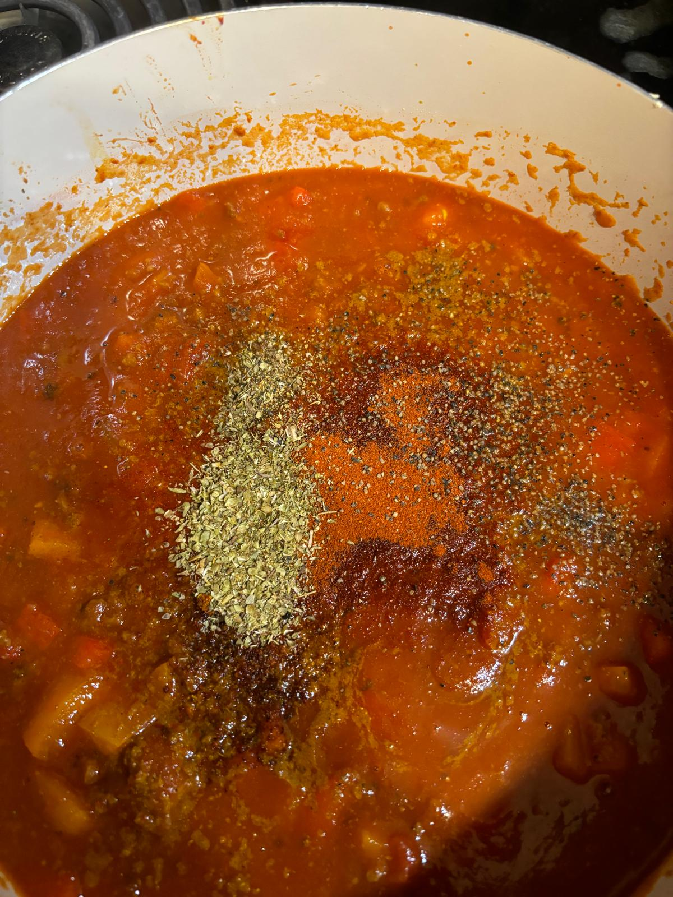

Chili Recipe
This is a special Recipe for someone very speacial to me!
Ingredients you need
- 1 Tablespoon of Olive Oil
- 2 Bell Peppers
- 2 Cloves of Garlic
- 2 Big Tomatoes or about 2 handfuls of little Tomatoes
- Ground Beef
- 1 Jar of Tomato Sauce
- Half a Jar of Water
- Table Spoon Tomato Paste
- 1 Teaspoon of Ketchup
- 1 Can of Corn
- 1 Can of Red Beans
Seasonings
- Garlic Salt
- Smoked Paprika Powder
- Curry Powder
- Chili Powder
- Oregano
Instructions
- Cut your Garlic Cloves into small pieces and put it in a Pan with some olive oil. Do not turn on the heat yet.
- Cut up your peppers and tomatoes. Turn on the stove when you are almost done.

- Let your Garlic brown a little and add your Ground Beef.
- Once the Ground Beef is done add your Peppers and the Tomatoes.

- Now add your Tomato Paste, Ketchup and the Tomato Sauce. Fill the Tomato Sauce Jar halfway up and also add the Water.
- Season your Chili with all the seasonings.

- Put the Lid on and let your Chili cook for about 15 minutes on medium heat.
- Add the Corn and the Red Beans. Wait 2-3 Minutes before continuing.
- Taste it and add more seasonings if needed.
YAY you made your Chili :)